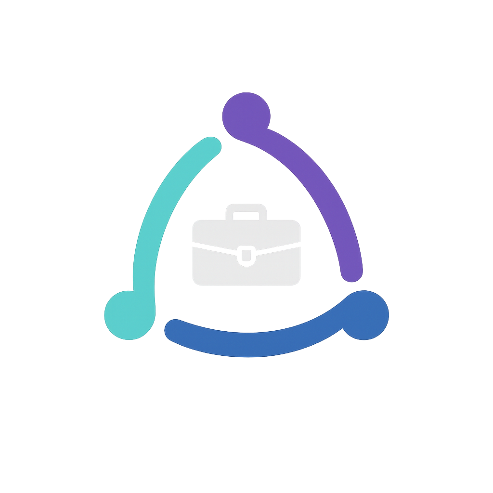

Question: which arc construction? Same placements in every column: large on dark, on light, header with the name, 32 px and 16 px, round avatar, one colour. Recommendation: logo-01/A, because it is the closest to the current logo and the dots are the "junction" points of direction A.
Raster with glow and briefcase. Shown unchanged for comparison. Blurs at 16 px; no light version.

One colour: not available
Each arc starts at a round node and stops before the next node. Closest to the current logo. The nodes are the junction points. Trade-off: the gaps get small at 16 px.
One colour
Three arcs join into one continuous shape. Says "the three areas are connected". Strongest at 16 px. Trade-off: no nodes, less like the current logo; in one colour it is a plain rounded triangle.
One colour
Three thick arcs with open corners, no nodes. The simplest form; the corners are the meeting points. Trade-off: the most abstract; can look like a loading or recycling sign.
One colour